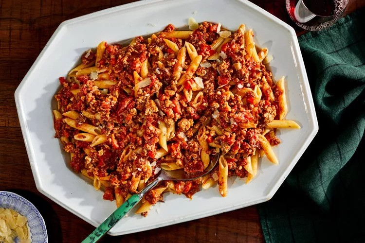

Pasta Bolognese

Description:
Pasta Bolognese is a classic Italian dish where al dente pasta meets a hearty ground beef sauce slow-cooked with onions, garlic, and tomatoes. The addition of milk helps tenderize the beef and also adds a note of richness to the flavorful bolognese sauce. It’s a family-friendly dinner everyone will love!
Ingredient List:
- Olive Oil: You have to use olive oil when making Italian food! Any other oil just won’t cut it.
- Onion, celery, and carrots: These ingredients form the base of flavor for a lot of your favorite soup recipes, and they do the same in Bolognese sauce.
- Garlic: You can add more if you’d like, but never add less!
- Lean ground beef: Because I don’t drain off the grease in this recipe, I recommend a lean ground beef to keep the sauce from being too greasy.
- Whole milk: I recommend sticking with whole milk, rather than swapping in a lighter version. It adds a lot of richness to the sauce.
- Crushed tomatoes: Crushed tomatoes give us more texture than canned tomato sauce, but they’re more broken down than diced tomatoes. This makes them perfect for pasta sauce.
- Tomato paste: Tomato paste isn’t just to intensify the tomato flavor; it also adds umami.
- Seasonings: You’ll need the standard salt and pepper, along with a bay leaf, oregano, and nutmeg.
- Tagliatelle pasta: Or your pasta of choice.
- Chopped parsley: For garnish.
Recipe Steps:
- Sweat the onions, celery, carrots, and garlic in a large pot on the stovetop.
- Add the ground beef and season with salt and pepper.
- Break up the beef and cook until it’s browned, stirring occasionally.
- Stir in the milk and simmer until it mostly evaporates.
- Add the crushed tomatoes, tomato paste, and remaining seasonings.
- Bring the mixture to a boil, then simmer on low, uncovered, until the sauce is thick and flavorful.